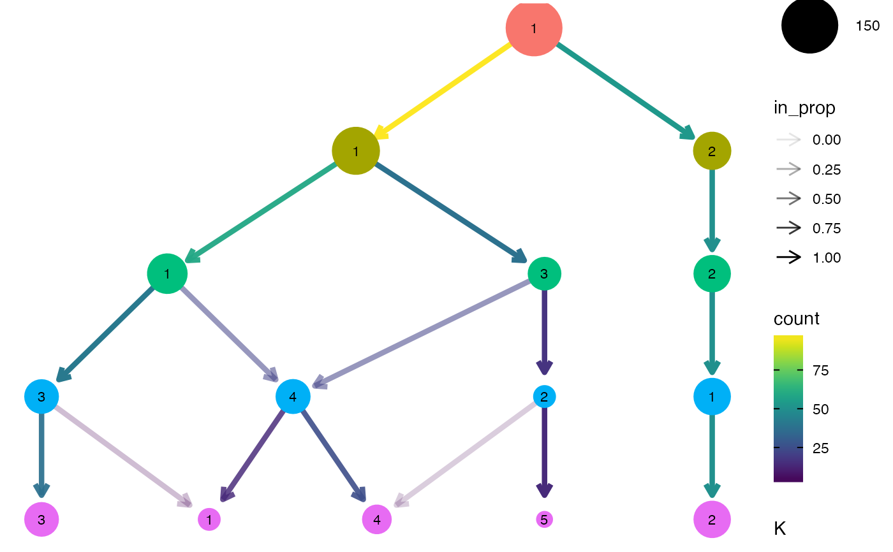

Creates a plot of a clustering tree showing the relationship between clusterings at different resolutions.
clustree(x, ...) # S3 method for matrix clustree(x, prefix, suffix = NULL, metadata = NULL, count_filter = 0, prop_filter = 0.1, layout = c("tree", "sugiyama"), use_core_edges = TRUE, highlight_core = FALSE, node_colour = prefix, node_colour_aggr = NULL, node_size = "size", node_size_aggr = NULL, node_size_range = c(4, 15), node_alpha = 1, node_alpha_aggr = NULL, node_text_size = 3, scale_node_text = FALSE, node_text_colour = "black", node_label = NULL, node_label_aggr = NULL, node_label_size = 3, node_label_nudge = -0.2, edge_width = 1.5, edge_arrow = TRUE, edge_arrow_ends = c("last", "first", "both"), show_axis = FALSE, return = c("plot", "graph", "layout"), ...) # S3 method for data.frame clustree(x, prefix, ...) # S3 method for SingleCellExperiment clustree(x, prefix, exprs = "counts", ...) # S3 method for seurat clustree(x, prefix = "res.", exprs = c("data", "raw.data", "scale.data"), ...) # S3 method for Seurat clustree(x, prefix = paste0(assay, "_snn_res."), exprs = c("data", "counts", "scale.data"), assay = NULL, ...)
| x | object containing clustering data |
|---|---|
| ... | extra parameters passed to other methods |
| prefix | string indicating columns containing clustering information |
| suffix | string at the end of column names containing clustering information |
| metadata | data.frame containing metadata on each sample that can be used as node aesthetics |
| count_filter | count threshold for filtering edges in the clustering graph |
| prop_filter | in proportion threshold for filtering edges in the clustering graph |
| layout | string specifying the "tree" or "sugiyama" layout, see
|
| use_core_edges | logical, whether to only use core tree (edges with maximum in proportion for a node) when creating the graph layout, all (unfiltered) edges will still be displayed |
| highlight_core | logical, whether to increase the edge width of the core network to make it easier to see |
| node_colour | either a value indicating a colour to use for all nodes or the name of a metadata column to colour nodes by |
| node_colour_aggr | if |
| node_size | either a numeric value giving the size of all nodes or the name of a metadata column to use for node sizes |
| node_size_aggr | if |
| node_size_range | numeric vector of length two giving the maximum and minimum point size for plotting nodes |
| node_alpha | either a numeric value giving the alpha of all nodes or the name of a metadata column to use for node transparency |
| node_alpha_aggr | if |
| node_text_size | numeric value giving the size of node text if
|
| scale_node_text | logical indicating whether to scale node text along with the node size |
| node_text_colour | colour value for node text (and label) |
| node_label | additional label to add to nodes |
| node_label_aggr | if |
| node_label_size | numeric value giving the size of node label text |
| node_label_nudge | numeric value giving nudge in y direction for node labels |
| edge_width | numeric value giving the width of plotted edges |
| edge_arrow | logical indicating whether to add an arrow to edges |
| edge_arrow_ends | string indicating which ends of the line to draw arrow
heads if |
| show_axis | whether to show resolution axis |
| return | string specifying what to return, either "plot" (a |
| exprs | source of gene expression information to use as node aesthetics,
for |
| assay | name of assay to pull expression and clustering data from for
|
a ggplot object (default), a tbl_graph object or a ggraph
layout object depending on the value of return
Data sources
Plotting a clustering tree requires information about which cluster each
sample has been assigned to at different resolutions. This information can
be supplied in various forms, as a matrix, data.frame or more specialised
object. In all cases the object provided must contain numeric columns with
the naming structure PXS where P is a prefix indicating that the column
contains clustering information, X is a numeric value indicating the
clustering resolution and S is any additional suffix to be removed. For
SingleCellExperiment objects this information must be in the colData slot
and for Seurat objects it must be in the meta.data slot. For all objects
except matrices any additional columns can be used as aesthetics, for
matrices an additional metadata data.frame can be supplied if required.
Filtering
Edges in the graph can be filtered by adjusting the count_filter and
prop_filter parameters. The count_filter removes any edges that represent
less than that number of samples, while the prop_filter removes edges that
represent less than that proportion of cells in the node it points towards.
Node aesthetics
The aesthetics of the plotted nodes can be controlled in various ways. By
default the colour indicates the clustering resolution, the size indicates
the number of samples in that cluster and the transparency is set to 100
Each of these can be set to a specific value or linked to a supplied metadata
column. For a SingleCellExperiment or Seurat object the names of genes
can also be used. If a metadata column is used than an aggregation function
must also be supplied to combine the samples in each cluster. This function
must take a vector of values and return a single value.
Layout
The clustering tree can be displayed using either the Reingold-Tilford tree
layout algorithm or the Sugiyama layout algorithm for layered directed
acyclic graphs. These layouts were selected as the are the algorithms
available in the igraph package designed for trees. The Reingold-Tilford
algorithm places children below their parents while the Sugiyama places
nodes in layers while trying to minimise the number of crossing edges. See
igraph::layout_as_tree() and igraph::layout_with_sugiyama() for more
details. When use_core_edges is TRUE (default) only the core tree of the
maximum in proportion edges for each node are used for constructing the
layout. This can often lead to more attractive layouts where the core tree is
more visible.
